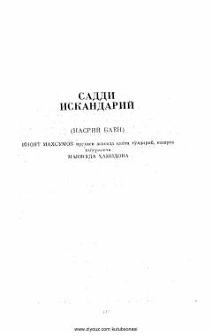

SIAlisher Navoiyning "Saddi Iskandariy" dostonining nasriy bayoni.
Ushbu kitob Alisher Navoiyning buyuk "Xamsa" dostonlaridan biri bo'lgan "Saddi Iskandariy" asarining nasriy bayonidir. Asarda Iskandarning hayoti, podshohlik faoliyati va falsafiy-axloqiy qarashlari hikoya qilinadi. Matn Inoyat Maxsumov nusxasi asosida Mavjuda Hamidova tomonidan qayta to'ldirilib, nashrga tayyorlangan.